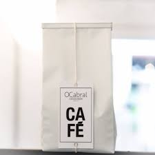

OCafe
Café
Bolsas
Embalagens
Blog
Página Princial / Cafés
Café

IBIRITAMA|ES
IBIRITAMA | ES | BRASIL
SITIO TERRA ALTA
Produtor: LIMA DELFON
Veriedade: OEIRAS
Processo: NATURAL
Altitude: 1000m
Torrador: TRETINO CAFÉS ESPECIAIS
Notas: Frutas amarelas, jaca madura
250g